A guided read of the illustrated lesson built around Alain Corneau’s 2003 film Fear and Trembling, adapted from Amélie Nothomb’s novel Stupeur et Tremblements — the story, the vocabulary of corporate power, the symbols, and a quiz to make it all stick.
Few phrases have traveled as far as fear and trembling. It began as a line from the Apostle Paul — “Continue to work out your salvation with fear and trembling” — became the name of the ancient protocol that governed how a subject behaved before the Emperor of Japan, and ended up on the poster of a French film about office life. Interestingly, the distance between an imperial court and a Tokyo office tower turns out to be remarkably short: in both places, a human being is measured by the depth of a bow.
The material behind this article is a richly illustrated presentation about Fear and Trembling, and it announces its own subject with a striking subtitle: “Hierarchy, Alienation, and the Absurdity of Corporate Humiliation in Alain Corneau’s 2003 Masterpiece.” It follows Amélie, a young woman born in Kobe in 1967, who returns at twenty-two to her childhood country with a one-year contract as an interpreter at the Yumimoto Corporation — and it dissects her year scene by scene: the hierarchy that crushes her, the cinematography of her isolation, the four steps of her demotion, and the music that accompanies her collapse. The material is as valuable for language learners as it is for film lovers, because every frame carries precise, transferable vocabulary — face-saving, chain of command, demotion, abasement. Below, the story comes first, then the vocabulary, then the symbols, and finally a quiz that checks what has stayed with the reader.
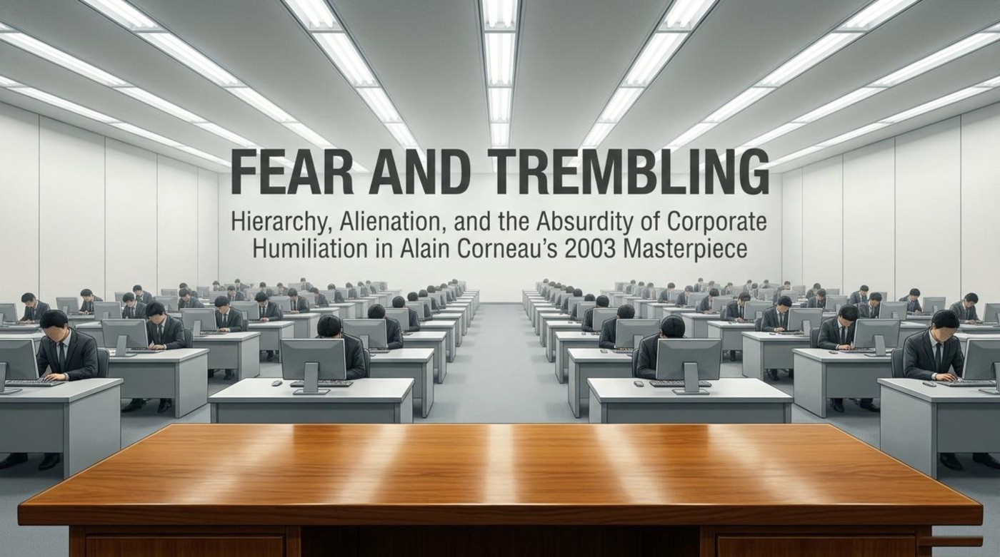
The presentation opens with the premise laid out in deliberately cold, bureaucratic English. Amélie’s employment is spelled out like a ledger entry: “Role: Interpreter, Yumimoto Corporation (Tokyo). Term: 1-Year Fixed Contract. Employee: Amélie (Born in Kobe, Japan, 1967; returning at age 22).” Above that box, a handwritten line gives the whole film its emotional engine: “I wanted to become a real Japanese...” Pay attention to the grammar of that sentence — a dream spoken in the first person, by someone who belongs to the country by birth and memory but not yet by experience.
The analysis describes the collision that follows as “a fracture between memory and reality.” Amélie’s Japanophile dream of a poetic homeland — cherry blossoms, harmony, belonging — is eclipsed by what the frame calls “the demanding, cooperative, and intense Japanese work culture — a system where the waste of human resources and absolute obedience are paramount.” The gap between the country she remembers and the company she enters is the film’s first lesson: memory is not a map, and a language learned with love still has to survive contact with institutions.
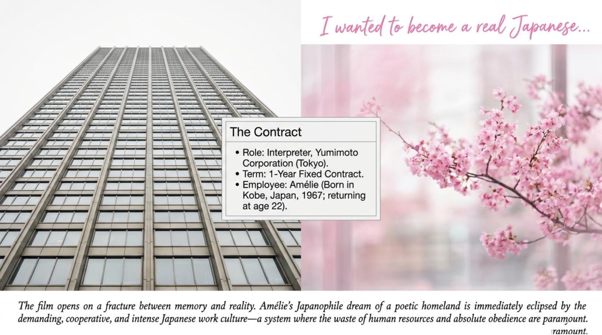
Inside the tower, power is arranged in five visible levels, and the presentation draws them as a pyramid pressing down on the heroine. At the top sits Mr. Haneda, the President, “eerily polite, possessing absolute, unquestioned power.” Below him comes Mr. Omochi, the Vice-President, “terrifying, loud; the enforcer of the corporate will.” Mr. Saito, the manager, is “anxious, rigid, strictly obedient to his superiors.” Miss Fubuki Mori, Amélie’s direct supervisor, is “glacial, beautiful, sadistic; survives by kicking down.” And at the very bottom stands Amélie herself, “dwarfed at the bottom, crushed by the accumulated weight of the system’s unreasonableness.”
The commentary under this pyramid deserves to be memorized, because it explains not only the film but thousands of real offices: “Yumimoto operates on an almost military hierarchical chain of command. Every manager is trapped in their own corporate hell, surviving only by projecting pressure downward.” Nobody in the building is free. The Vice-President terrifies the manager, the manager torments the supervisor, and the supervisor — the only person in the chain with someone beneath her — discharges the entire accumulated weight onto the newcomer at the bottom.
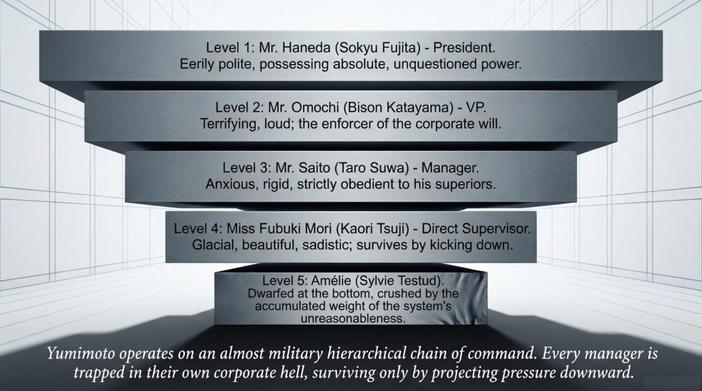
Amélie’s first mistake is the film’s most quoted paradox. She attends an inter-company deal meeting — and the presentation lists her crime without mercy: “Infraction: Speaking tactlessly perfect, fluent Japanese during an inter-company deal meeting.” The cultural expectation she has violated is stated just as bluntly: “Western female employees are hired to function as mute pieces of eye candy.” The verdict arrives instantly: “Verdict: Demotion.”
The handwritten note scrawled across that frame — “My competence is an insult.” — is the interpretive key to the whole episode. The analysis spells out the logic: “In a system built on rigid face-saving, demonstrating unexpected skill disrupts the established order. Competence outside one’s designated rank is not an asset; it is a punishable offense.” By translating brilliantly, Amélie embarrasses everyone above her: if the newest, lowest, foreign employee outperforms the chain, then every rank above hers loses face. Her talent, in that room, functions as an accusation.
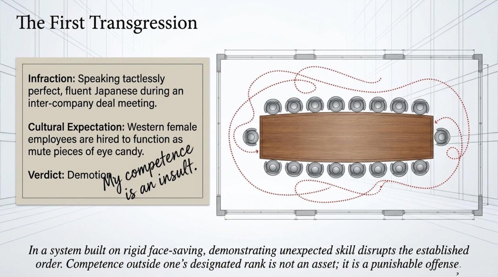
Demotion does not teach Amélie obedience; it teaches her to work around the system, and the presentation titles the next episode with a deliberately provocative pairing of words. The act itself is described in brisk business English: “Amélie utilizes her language skills and diligence to compile a cross-departmental report on overseas dairy opportunities for Mr. Tenshi (Yasunari Kondo).” In most Western companies this is called initiative. The result is described in the language of crime: “She is accused of stealing work, breaking the absolute chain of command, and dragging colleagues into anarchy.”
The commentary turns the episode into a thesis: “The corporate machine demands passive complicity. Amélie’s attempt to win through merit and hard work is the ultimate cultural cultural mistranslation.” The phrase is worth pausing over. Amélie has translated everything correctly except the rules of the room; she has decoded the language perfectly and the institutions not at all. Her report — pages of genuine, diligent analysis — is read not as a contribution but as a seizure of other people’s authority.
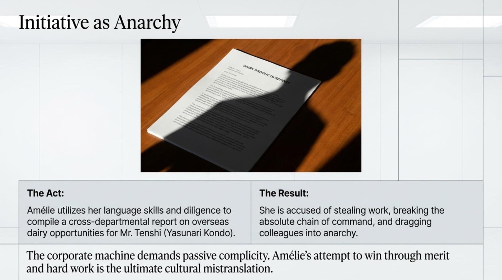
The most quietly tragic frame of the presentation places the two women side by side like mirror images. Amélie — played by Sylvie Testud in a César Award-winning performance — is drawn with “gangly limbs, barely-disciplined hair, irrepressible smiles, erratic energy,” and a methodology of “individual merit, Western diligence, and naive optimism.” Fubuki is her photographic negative: “flawless self-control, perfect beauty, glacial stillness,” with “absolute adherence to unspoken rules.” Her survival strategy is stated without anesthesia — she “survives by taking sadistic pleasure in belittling the foreigner who flouts the rules she herself suffers under.”
The presentation refuses to make Fubuki a simple villain: “Fubuki is the tragic embodiment of the system’s demands on Japanese women. Amélie’s irrepressible inner freedom represents a direct threat to Fubuki’s hard-won, rigid perfection.” The two women want the same thing — dignity inside the machine — and the machine has room for only one version of it. Fubuki’s cruelty, read this way, is the sound of a person paying for her own survival.
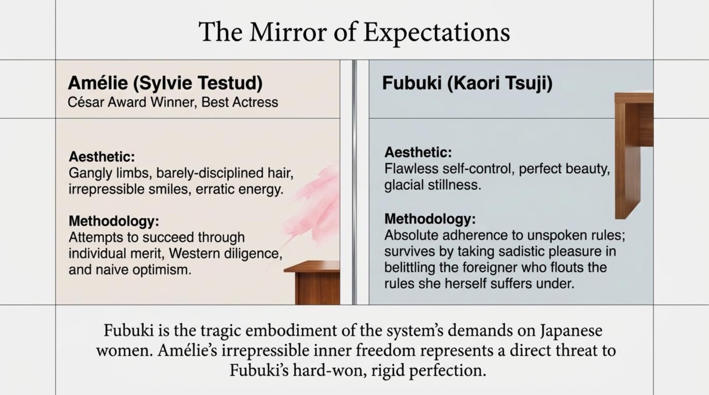
The presentation then steps back from the plot to study the film’s grammar. Under the heading of isolation it lists three visual signatures. The first is restraint: “Few sets, sober costumes, and limpid editing strip away distraction, focusing entirely on the psychological environment.” The second is architecture: “The architecture of the 44th floor visually reinforces the insignificance of the individual against the institution.” The third is emptiness: “The vast negative space visually represents the emotional and communicative void between bosses and workers.”
Sound completes the picture. The analysis names the film’s musical motif — “Bach’s Goldberg Variations, performed on harpsichord by Pierre Hantai” — and explains the choice as deliberate irony: “Director Alain Corneau utilizes the precise, crystalline, and mathematical order of Bach’s variations as a searing, ironic counterpoint to the total collapse of Amélie’s professional dignity. The music provides a gentle, tragicomic rhythm to a descent into madness.” The most ordered music in the Western canon plays over the least ordered period of the heroine’s life, and the contrast between the two is the point.
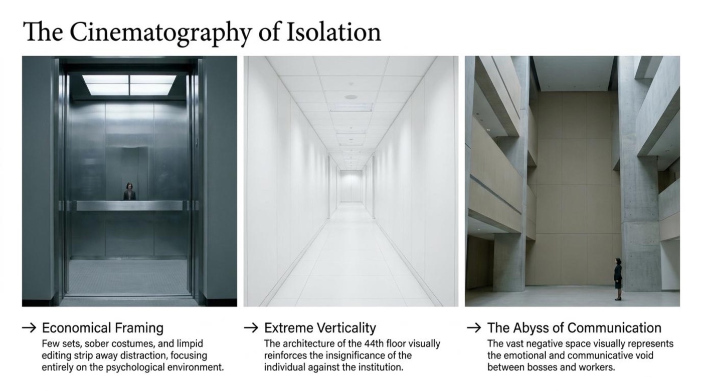
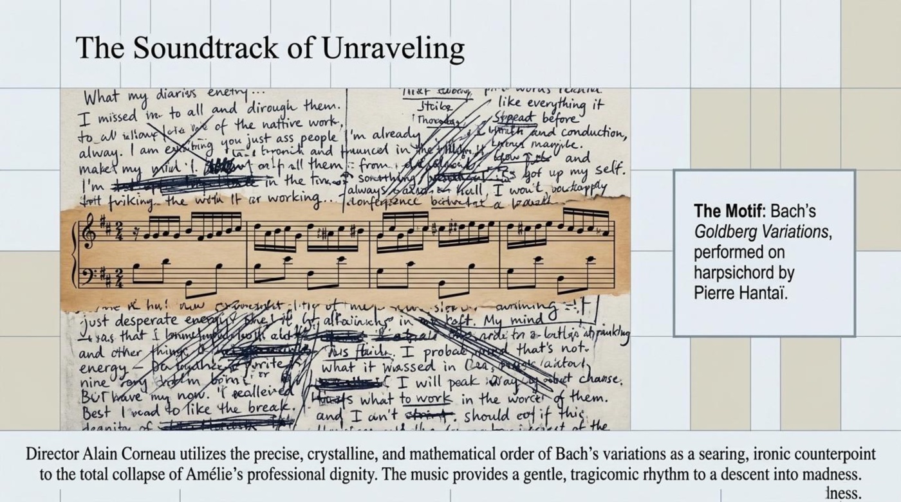
The film’s cruelest structure is also its most orderly: Amélie’s descent happens in four documented steps, each stamped like a rejected application. Step one strips the dream — the translator role, “the original Japanophile dream, shattered by speaking too well.” Step two strips the usefulness — the accounting assistant, buried in “a punishing assignment of endless accounts chores.” Step three strips the mind — the calendar adjuster, handed “the absurd repetitive task; designed to break the mind.” Step four strips everything that remains — the bathroom attendant: “total abasement; stripping away all linguistic and intellectual utility.”
Over this staircase of shame the presentation lays a quotation that explains the film’s very title: “Continue to work out your salvation with fear and trembling.” — Philippians 2:12. The insight that follows connects scripture, plumbing, and management theory in a single sentence: “The system attempts to completely break the individual by stripping away all utility, leaving only the physical endurance of shame. Amélie becomes passively complicit in the absurdism of her own humiliation.” A bathroom, in the geometry of the building, is the basement made literal — the place where a person’s rank, language, and intelligence are all equally irrelevant.
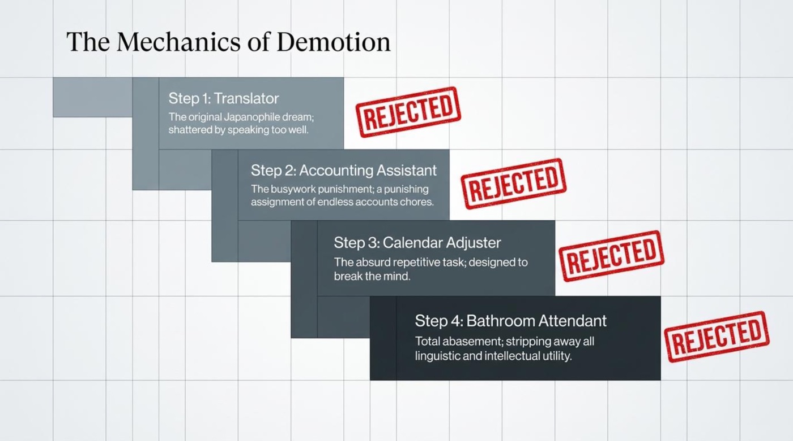
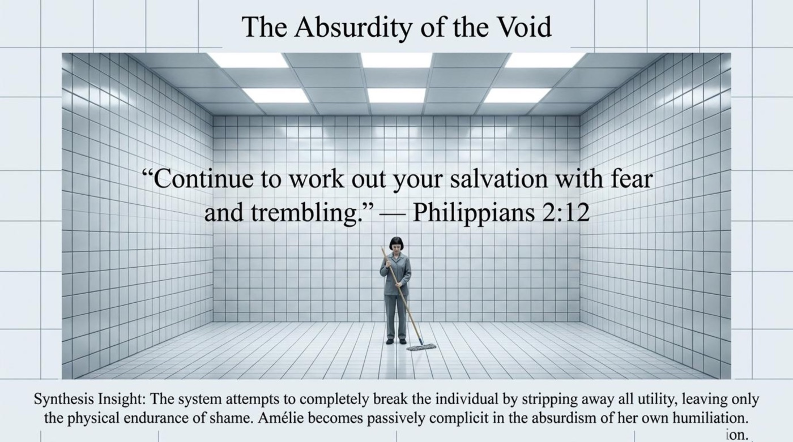
The endgame is framed like a memo: “Subject: Contract Non-Renewal (7-Month Notice). Status: Employee refuses to break the 1-year contract.” The commentary explains why Amélie will not simply walk away: “Quitting early would mean losing face, a massive cultural defeat.” Instead, “Amélie accepts the bathroom duties with a polite smile, denying Fubuki the satisfaction of having broken her will.” The sentence that distills the entire film follows immediately: “The ultimate victory in the Yumimoto system is not succeeding, but enduring.”
And then the presentation delivers its most haunting observation. Amélie finally gets her audience with the President — and achieves her childhood dream in the worst possible way: “Amélie finally achieves her childhood goal of becoming a ‘real Japanese’ — not through corporate success or linguistic perfection, but by entering the President’s office entirely broken, exhibiting the requisite fear, trembling, and ultimate humility.” The dream comes true, and the dream’s fulfillment is the punishment. It is the film’s final, bitter symmetry, and it is why the material returns to the imperial protocol one last time: the office, in the end, demanded exactly what the court once demanded.
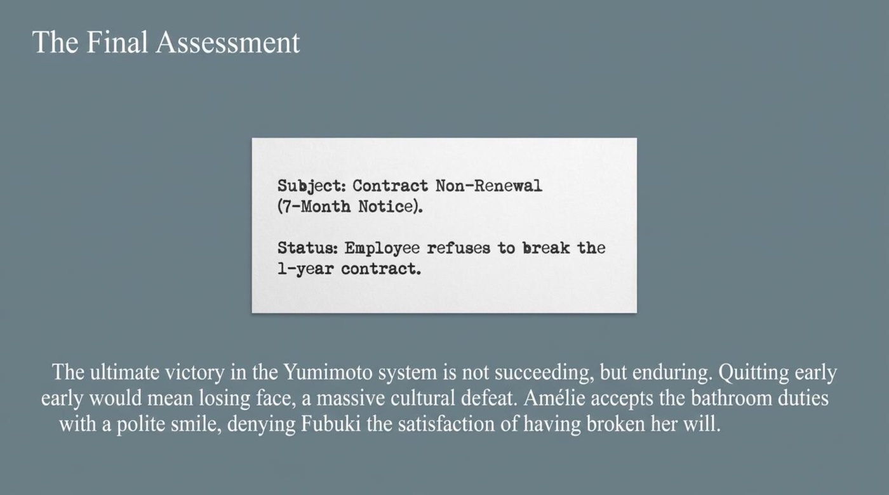
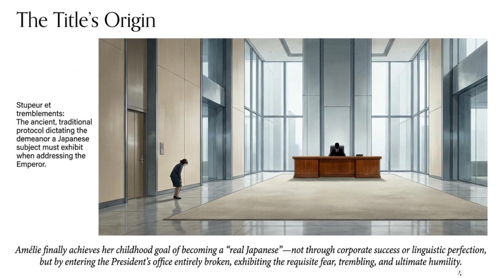
The material doubles as a compact course in the English of organizations. The words below do most of the interpretive work in the presentation, and each one travels far beyond this particular film. Every entry lists the literal sense, the sense the word carries inside the material, the example straight from the lesson, and the way the material itself glosses the term.
Literal meaning: intense dread accompanied by physical shaking.
Figurative / contextual meaning: the ritual demeanor of humility that a subordinate owes to absolute authority — at once sincere terror and required performance.
Example from the material: “Continue to work out your salvation with fear and trembling.” — Philippians 2:12
How the material explains it: the presentation traces the phrase to “the ancient, traditional protocol dictating the demeanor a Japanese subject must exhibit when addressing the Emperor,” then applies the same protocol to a corporate office. The explanation matters because it fuses two worlds — the sacred and the corporate — into one bodily behavior.
Literal meaning: protecting the “face” — one’s public image and standing before others.
Figurative / contextual meaning: the social law of Yumimoto: it makes Amélie’s talent intolerable and her early quitting impossible.
Example from the material: “In a system built on rigid face-saving, demonstrating unexpected skill disrupts the established order.”
How the material explains it: the final assessment calls early quitting “a massive cultural defeat” and shows Amélie choosing endurance specifically to deny Fubuki the satisfaction of having broken her will. The material treats face as currency: it can be earned, spent, and defended in public.
Literal meaning: the ordered line of authority running from the top of an organization to its bottom.
Figurative / contextual meaning: an absolute rule that Amélie breaks twice — by speaking above her rank in the meeting and by writing across departments.
Example from the material: “She is accused of stealing work, breaking the absolute chain of command, and dragging colleagues into anarchy.”
How the material explains it: the hierarchy frame calls the chain “almost military” and adds that every manager “survives only by projecting pressure downward.” The chain is simultaneously an org chart and a system for distributing pain.
Literal meaning: a reduction in rank, status, or responsibility.
Figurative / contextual meaning: the institution’s main instrument of punishment, administered in four descending steps rather than one.
Example from the material: “Verdict: Demotion.”
How the material explains it: the mechanics frame details each rung down — translator, accounting assistant, calendar adjuster, bathroom attendant — and characterizes the final step as “total abasement; stripping away all linguistic and intellectual utility.” Demotion here is not administrative housekeeping; it is engineered suffering.
Literal meaning: the state of being brought low, humbled, degraded.
Figurative / contextual meaning: both the system’s method and, paradoxically, the soil in which resilience grows.
Example from the material: “...in that total abasement, the individual discovers a core of resilience that the corporation cannot touch.”
How the material explains it: the closing frame argues that the system “strips the worker of all rank and dignity” and yet cannot reach the person underneath. Abasement is presented as the machine’s only tool — and, in the end, as its failure.
Literal meaning: impossible to suppress, restrain, or hold back.
Figurative / contextual meaning: Amélie’s defining trait — smiles, energy, imagination — and the exact quality the system cannot digest.
Example from the material: “Amélie’s irrepressible inner freedom represents a direct threat to Fubuki’s hard-won, rigid perfection.”
How the material explains it: the character frame pairs the word with “gangly limbs, barely-disciplined hair, irrepressible smiles, erratic energy.” The material positions irrepressibility as a threat — freedom itself, in adjective form.
Literal meaning: a person deeply devoted to Japan and its culture, formed on the model of Francophile and Anglophile.
Figurative / contextual meaning: Amélie’s identity at the start of the story — and the dream the system methodically dismantles.
Example from the material: “The original Japanophile dream, shattered by speaking too well.”
How the material explains it: the opening frame calls her homeland vision “a Japanophile dream of a poetic homeland” that is “eclipsed by the demanding, cooperative, and intense Japanese work culture.” The word names the gap between loving a culture from outside and living inside its institutions.
The six most transferable terms are collected below as flip cards. Tap or click any card to turn it over; the back holds the literal meaning, the meaning inside the material, a quotation, and a short note on why the word matters. The Flip all cards button turns the whole deck at once, and every card works with the keyboard — Tab to reach it, Enter or Space to flip it.
Taken together, the vocabulary forms a small theory of institutional life. Authority produces hierarchy; hierarchy produces face-saving; face-saving turns competence into crime; punishment arrives as demotion and ends in abasement; and what survives the fall is the irrepressible part of a person. Learn the words as a chain rather than a list, and every subsequent viewing of the film — or reading of a corporate scandal in the news — will make the chain audible.
The presentation is not content to summarize the plot; it reads the film as a system of symbols, and four of them carry the interpretive weight. Each is worth unpacking, because each turns a concrete image into an idea about institutions and the people inside them.
The presentation reads the entire film through vertical space. Power points up; shame points down; the plot is a descent. The architecture frame notes that “the architecture of the 44th floor visually reinforces the insignificance of the individual against the institution,” while the hierarchy frame shows Amélie “dwarfed at the bottom, crushed by the accumulated weight of the system’s unreasonableness.” The symbol completes itself at the end, when the demoted interpreter ends up below the offices entirely — and the inner-escape frame describes her response in exact spatial terms, as “countering her physical descent into the basement with an internal ascent into magical realism.” The building owns her body; the sky owns her mind. Once the vertical pattern is visible, every elevator ride in the film becomes a status report.
The soundtrack choice is explained as deliberate irony: “Director Alain Corneau utilizes the precise, crystalline, and mathematical order of Bach’s variations as a searing, ironic counterpoint to the total collapse of Amélie’s professional dignity.” The Goldberg Variations are music that never stumbles — an aria and thirty variations over one bass line, each solved like an equation — and the film plays them, on the harpsichord, over an unraveling career. The symbol works because the audience hears structure while watching structure being destroyed: “The music provides a gentle, tragicomic rhythm to a descent into madness.” Order outside, collapse inside — the same contrast the office towers draw with glass and concrete.
At the depth of her humiliation, the presentation gives Amélie a handwritten line of pure fantasy: “If I jump, I will not fall. I will fly.” The insight beneath it is precise: “To survive a system designed to crush the mind, Amélie retreats entirely into her imagination. Any normal person might have thrown themselves out the window to end the pressure; Amélie jumps out the window to fly over the city.” The window is the system’s final wall — the edge of the building, the edge of obedience — and Amélie crosses it not to escape the world but to enlarge it. The symbol reframes the whole film: the story of a broken employee is also the story of an imagination that refuses to be evicted.
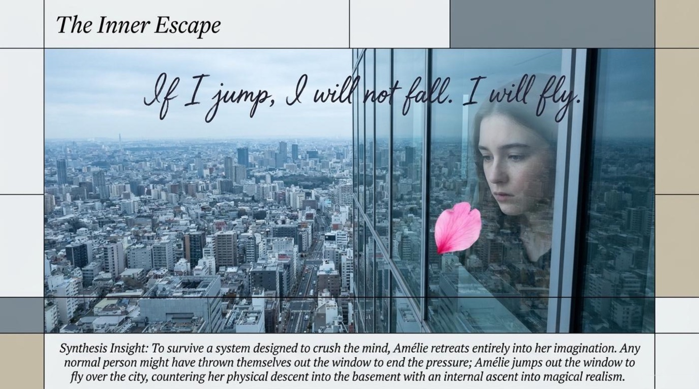
The title itself is a symbol, and the presentation traces it to its source: “Stupeur et tremblements: The ancient, traditional protocol dictating the demeanor a Japanese subject must exhibit when addressing the Emperor.” The final frames close the circle: Amélie enters the President’s office “entirely broken, exhibiting the requisite fear, trembling, and ultimate humility” — the posture of a courtier before an emperor, performed in a corporate lobby. The bow that begins the film as a dream of belonging ends it as the exact measurement of a defeat; and yet the closing analysis insists on the ambiguity: the system “successfully strips the worker of all rank and dignity, but in that total abasement, the individual discovers a core of resilience that the corporation cannot touch.” The bow, like the word beneath it, holds both meanings at once — submission performed, and selfhood preserved beneath the performance.
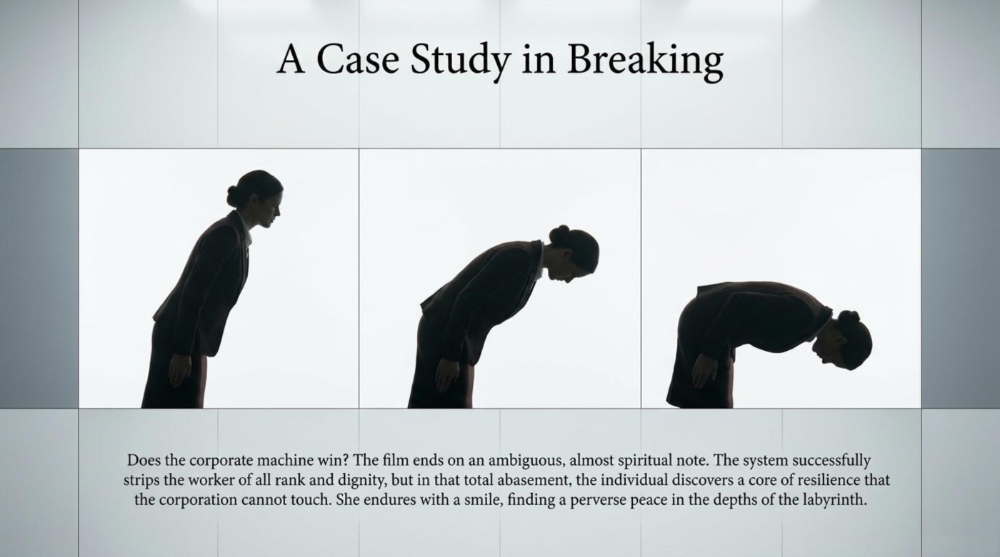
The quiz below collects the essential facts, vocabulary, and phrases from the material. Eight questions cover the story, the language, and the ideas; each answer is checked instantly, with a short explanation revealed underneath. The score counter and the row of progress dots above the questions track the run, the pop above the bar celebrates or protests every choice, and the panel at the end offers a verdict and a fresh start.
The presentation ends on what it calls an ambiguous, almost spiritual note, and its closing words deserve to stand as the epitaph of the whole story: “The system successfully strips the worker of all rank and dignity, but in that total abasement, the individual discovers a core of resilience that the corporation cannot touch. She endures with a smile, finding a perverse peace in the depths of the labyrinth.” That sentence is worth copying out by hand, in English, for the vocabulary alone — abasement, resilience, perverse peace, labyrinth — and for the idea underneath: an institution can occupy a person’s rank, salary, and schedule, and still fail to reach the one room where the person actually lives.
The main takeaway for language learners follows directly from the material. Words are instruments of power — chain of command, face, demotion, abasement — and knowing them precisely means reading systems quickly, describing them honestly, and recognizing the ones designed to waste human beings. The call to action is simple: watch or rewatch Fear and Trembling (2003) with subtitles, play the vocabulary game at the top of this page, run the quiz until every dot turns green, and then try the presentation’s own trick — describe a workplace you know, in English, using the five-level pyramid and the four steps down. The language that names a machine is the first tool for surviving one.
The complete illustrated presentation used for this article is available below. Each link opens in a new tab.